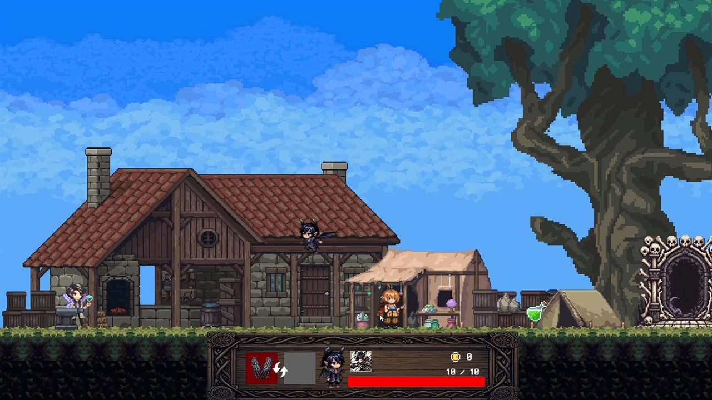
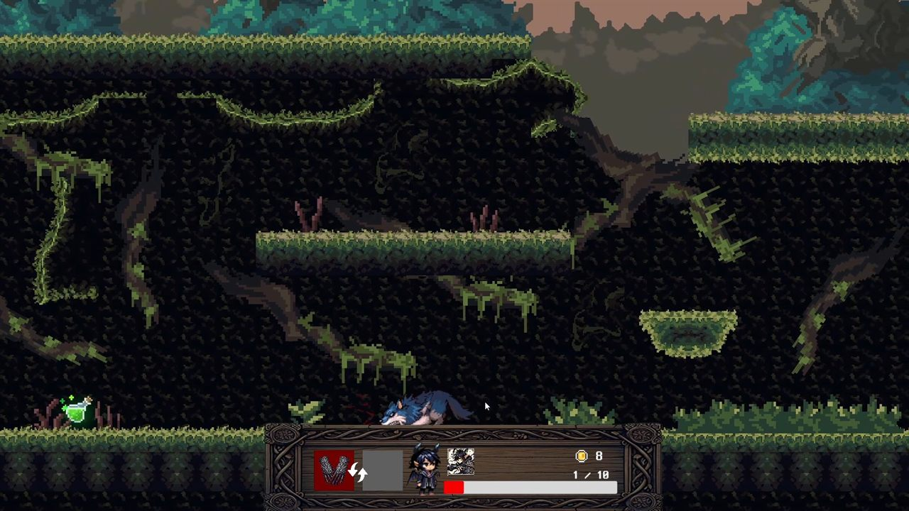
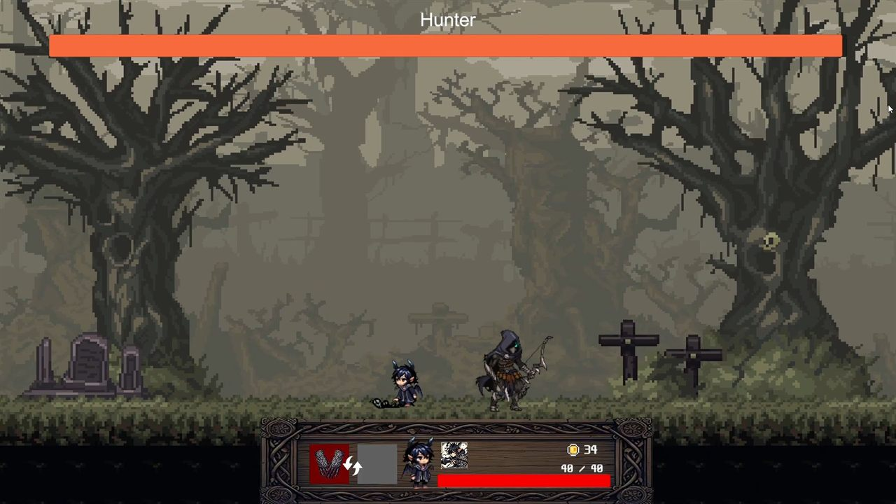
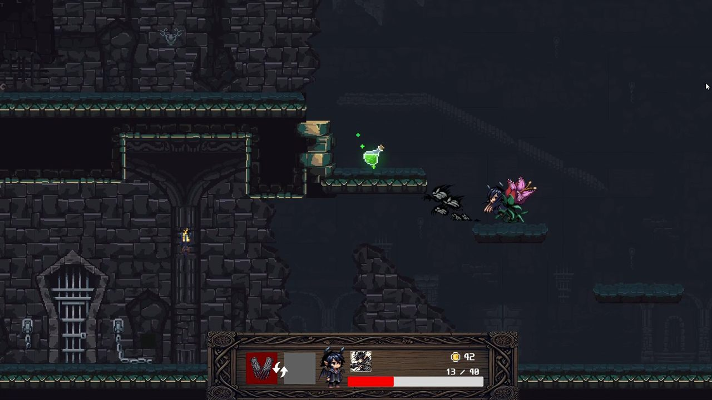
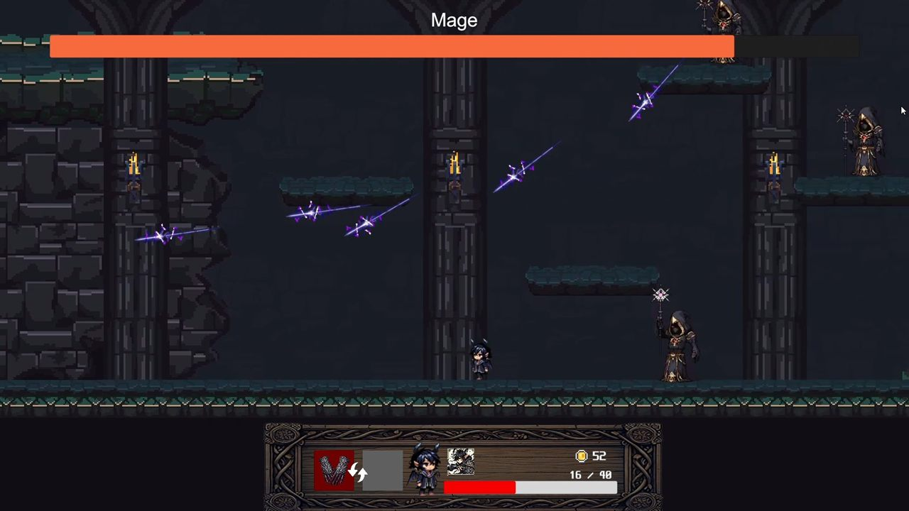
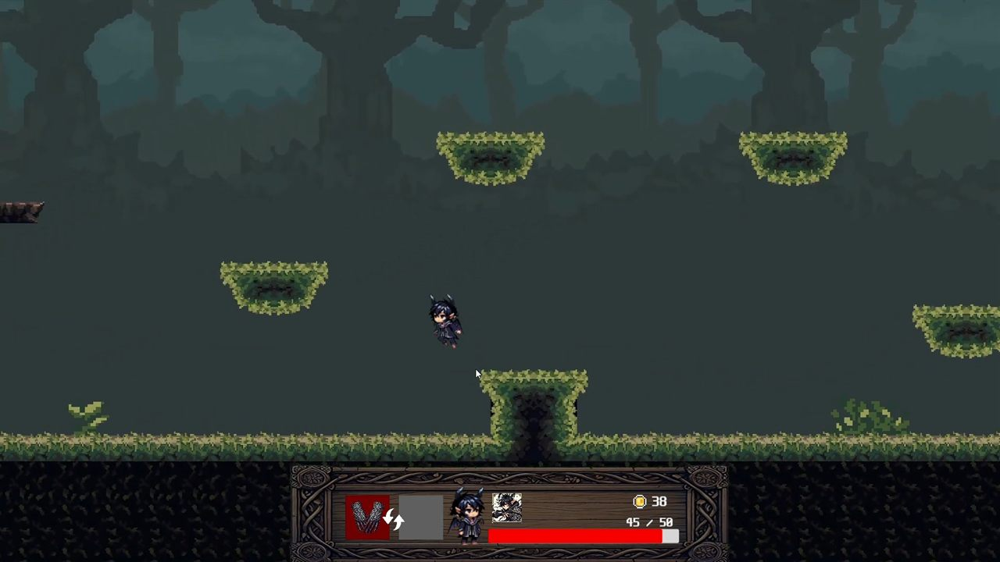
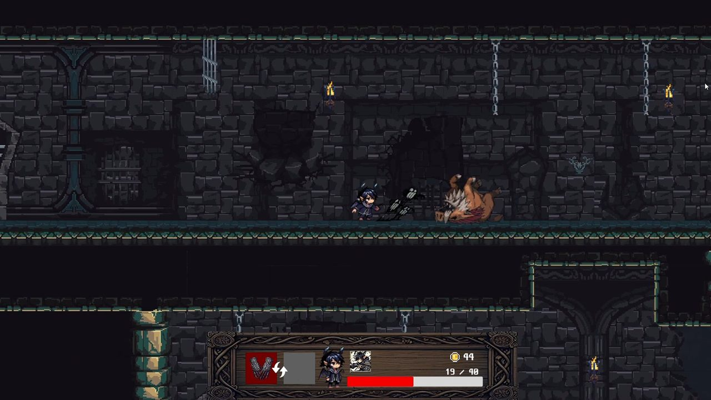

선악이 뒤바뀐 동화 속을 달리는 2D 로그라이트 액션.
3인 팀의 PM으로 전체 기획 초안을 잡고, 직접 맡은 레벨 디자인(맵·몬스터 배치)과 마을 기능 전체를 Unity로 구현했습니다. 구현하면서 초안과 달라진 부분이 많아, 실제로 만든 결과를 기준으로 정리했습니다.





한 판의 흐름
실제 빌드는 마을에서 출발해 여왕의 성을 거쳐 숲 스테이지를 지나 보스 ‘사냥꾼’을 만나고, 성 스테이지를 지나 ‘마법사’와 싸우는 흐름입니다. 쓰러지면 마을로 돌아와 모은 골드로 능력치를 올리고 다시 출발합니다.
마을→여왕의 성→숲 스테이지→보스: 사냥꾼→성 스테이지→보스: 마법사
레벨 디자인 · 직접 구현
모든 스테이지의 맵을 타일로 구성하고 몬스터 출현 위치를 정했습니다. 숲은 나무와 발판이 이어진 구간으로, 성은 석조 통로와 여러 층으로 구성했습니다. 몬스터 위치를 조정하면서 전투와 다음 이동 사이의 난이도를 맞췄습니다.


마을 기능 · 직접 구현
마을은 한 판이 끝날 때마다 돌아오는 거점입니다. 능력치 강화와 체력 회복, 마을의 기능 전체를 직접 구현했습니다.
체력, 공격력, 이동속도, 공격속도, 크리티컬 확률, 크리티컬 데미지, 대시 쿨타임을 골드로 올립니다.
능력치마다 10단계이고, 한 단계 오를 때마다 비용이 두 배가 됩니다.
1 → 2 → 4 → 8 골드
쓰러지면 ‘처음으로’를 눌러 마을로 돌아와 체력을 회복하고, 모은 골드로 강화한 뒤 다시 숲으로 나갑니다.
기획 초안
전체 기획 초안을 작성했습니다. 아래는 초안의 구조이며, 구현하면서 모드, 마을, 보상, 보스 구성까지 많은 부분이 바뀌었습니다. 자세한 내용은 기획서 PDF에 있습니다.
몬스터 처치→골드·파편·영혼→마을에서 강화·유물·회복→보스 처치→동화 무기·고유 능력 해금
무기는 칼이나 활이 아니라 그 동화에 나오는 물건으로 기획했습니다. 백설공주 편을 깨면 독을 묻히는 투척 무기 ‘독사과’, 벽을 부수고 숨은 아이템을 찾는 ‘곡괭이’, 공격을 되돌리는 고유 능력 ‘마법거울’을 얻는 구조입니다.
해금한 무기와 고유 능력 중 각각 2개를 골라 들어가는 무한 모드입니다. 일반 스테이지 10개와 보스 1개를 한 바퀴로 묶고, 바퀴가 돌 때마다 몬스터가 조금씩 강해집니다.
결과와 배운 점
익숙한 동화를 선악이 뒤바뀐 액션으로 풀어 콘셉트를 분명히 했고, 숲과 성 구간을 두 보스전까지 직접 플레이해 볼 수 있게 만들었습니다.
외주로 받는 그래픽 리소스가 부족해 초안의 다섯 동화와 최종 보스까지는 만들지 못했습니다. 초안의 핵심이던 동화 무기 해금도 빠지면서, 반복 플레이의 동기가 능력치 강화 하나에 기대게 되었습니다.
초안의 범위가 3인 팀이 한 학기에 만들기에는 컸고, 팀원별 작업 진행을 중간에 맞춰 보는 과정이 부족했습니다. 구현 단계에서 서로 만든 부분이 기획과 어긋난 것을 늦게 확인해, 범위를 크게 줄일 수밖에 없었습니다. 이 경험 이후로는 만든 것을 직접 자주 플레이하며 기획과 맞는지 확인하는 것을 작업의 기본으로 삼고 있습니다.
초안을 끝까지 지키기보다, 전투와 마을 강화처럼 핵심 경험을 먼저 만들고 플레이하며 범위를 조정하는 것이 중요하다는 것을 배웠습니다.
2024 한국게임학회 추계 학술발표대회 논문에 공저자로 참여했습니다.